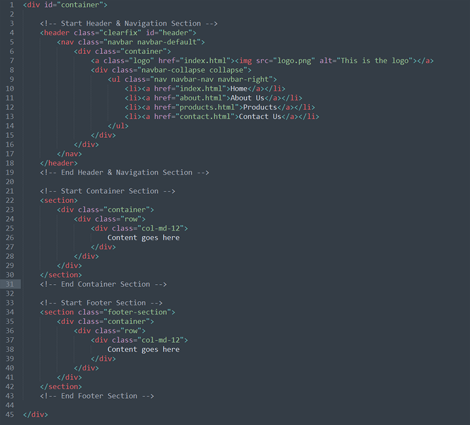

Created: 13/Feb/2018
By: Chitrakoot Web
Email: hello@chitrakootweb.com
Thank you for purchasing our theme. If you have any questions that are beyond the scope of this help file, please feel free to email. Thanks so much!
Follow the steps below to get started with Responsive Multipurpose HTML Template:
Package/C-HEAD - Responsive Multipurpose HTML Template Folder to find all the Templates FilesC-HEAD HTML/assets - Stylesheets, JavaScript, Fonts etc Folder C-HEAD HTML/assets/images - Images Folder C-HEAD HTML/index.html - Index File/HomepageThis theme has wide and boxed layouts with different color options. All of the information within the main content area is nested within a div with an id of "container". The general template structure is the same throughout the template. Here is the sample structure.
We are using several CSS files in this Template. Chitrakoot Web Always follow the latest trends of coding standard. Many browser interpret the default behavior of HTML elements differently. By using a general style CSS file, we can work round this. This file also contains some general styling, such as anchor tag colors, font-sizes, etc. Keep in mind, that these values might be overridden somewhere else in the file.
CSS Fiile Included
style.css situated on assets/css/ contain the the all necessary custom style which is well organized and following are the style.css file structure:
If you would like to edit a specific section of the site, simply find the appropriate label in the CSS file or CSS file, and then scroll down until you find the appropriate style that needs to be edited.
If you would like to change the color scheme find the CSS in the switcher folder:
This theme imports below Javascript files.
I've used the following images, icons or other files as listed.
jQuery / CSS & Fonts
Once again, thank you so much for purchasing this theme. As I said at the beginning, I'd be glad to help you if you have any questions relating to this theme. No guarantees, but I'll do my best to assist.
Chitrakoot Web